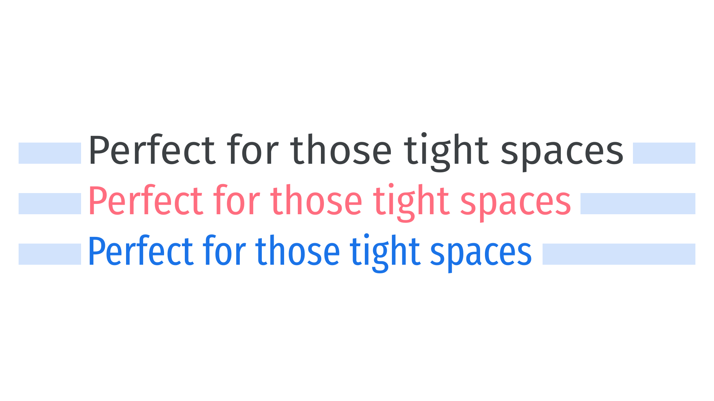

Condensed, narrow, or compressed
By Google Fonts Knowledge contributors · Google Fonts Knowledge.
Original article · Source on GitHub · CC BY-SA 4.0. Text, illustrations and existing credits reproduced from the licensed Knowledge repository. Open Shelf adapted the layout and links; these adaptations are also CC BY-SA 4.0. No endorsement implied.
In type design, condensed and narrow are references to the typeface’s width, usually implying narrower versions of its normal width. Compressed faces are typically even more condensed, and often form part of a family or superfamily that already has a condensed option.

These narrow-width faces are not merely scaled horizontally—they’re redrawn so that proportions and angles are reshaped relative to the original design without causing distortion to the letterforms (in contrast to type that is artificially compressed by software. They sit at the opposite end of the width scale to “wide” or “extended” types.